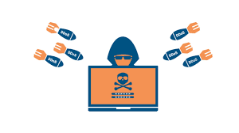

What Are DDoS Attacks?
DDoS stands for distributed denial-of-service. It is an attack on a network or server that essentially floods it with data traffic which slows down the server and eventually causes it to crash. Packet loss can occur and data can be lost. It can make using a website or the internet impossible.
Diagram of a DDoS Attack

How to Prevent DDoS Attacks
DDoS attacks can be prevented by completing software updates, using a firewall, using a VPN, and by changing IP addresses.